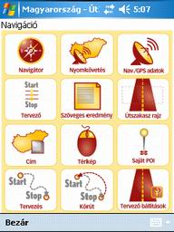
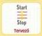
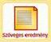
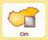

3.3 Navigáció
A "Navigáció" menübe találhatja
az összes funkciót, ami a navigációhoz, nyomkövetéshez, útvonal tervezéshez,
saját POI kezeléshez szükséges.

3.3.1.
Navigátor
A "Navigátor" gombot
megnyomva elindul a navigáció. Részletes leírást olvashatja a "Fõmenü/Navigátor"
fejezetben.
3.3.2.
Nyomkövetés
A
"Nyomkövetés" gombot megnyomva elindul a GPS jelek feldolgozása. A GPS vevõ paraméterei
a „Fõnenü/Beállítások/GPS beállítások” ikonra kattintva
állíthatók be.
Nyomkövetés közben a térkép kézi mozgatási funkciói nem mûködnek, mert
a program a GPS koordinátákat veszi központnak. A "Nyomkövetés"
közbeni képernyõ megjelenés, a "Fõmenü/Beállítások/Navigátor
beállítások" -ba beállított megfeleõ paraméterek szerint
fog történni (Térképi forgatás, Térlépkezelõ eszközök, Teljes képernyõ, GPS
adatok).
A
nyomkövetés elindítása után, a GPS vevõtõl függõen pár másodperc vagy néhány
perc múlva megjelenik pozíciója a térképen. A program soros (virtuális) porton
keresztül képes bármely NMEA szabvány adatsorozatot magából kibocsátó GPS
vevõberendezés által vett koordinátát, illetve koordinátasorozatot a térképen
megjeleníteni. Ez akár Magyarország térképén, akár a településtérképeken megtehetõ.
"Nyomkövetés" közben lehetõség
van "Saját POI" felvételére is, melynek leírását
olvashatja a "Segédablakok,
eszköztárak/Helyzetérzékeny menü" fejezetben.
3.3.3.
Nav./GPS adatok
A "Nav./GPS adatok" gombot
megnyova a Térképi oldal alján megjelenik egy segéd ablak amelyben vagy a
navigációsv vagy a GPS adatok jelenek meg. Részletes leírását olvashatja a
"Segédablakok/Navigációs adatok"
vagy a "Segédablakok/GPS
adatok" fejezetben.
3.3.4. 
Tervezõ
A "Tervezõ" gombot
megnyomva a tervezõ oldalra jut, melynek részletes leírását láthatja a "Fõmenü/Tervezõ"
fejezetben.
3.3.5. 
Szöveges eredmény
A "Szöveges eredmény" gombot
megnyomva a szövegeseredmény oldalra jut, melynek részletes leírását
olvashatja a "Fõmenü/Tervezõ/Szöveges
eredmény " fejezetben.
3.3.6.
Útszakasz rajz
Az "Útszakasz rajz"
gombot megnyomva a program megmutatja a "Tervezõ"
-be elkészítette útvonal terv térképi megjelenését, melynek részletes leírását olvashatja a "Fõmenü/Tervezõ/Útszakasz
rajz " fejezetben.
3.3.7. 
Cím
A "Cím" ikon segítségével
a tervezõbe vihet be címet annélkül, hogy megnyitná a "Tervezõ"
oldalt. Részletes leírását olvashatja a "Fõmenü/Navigátor/Cím"
fejezetben. A cím bevitele után a program visszaugrik a "Navigációs
menübe".
3.3.8.
Térkép
A "Térkép" ikon segítségével
a tervezõbe vihet be térképi pontokat annélkül, hogy megnyitná a "Tervezõ"
oldalt. Részletes leírását olvashatja a "Fõmenü/Navigátor/Térkép"
fejezetben. A térképi pont bevitele után a program visszaugrik a
"Navigációs menübe".
3.3.9.  Saját POI
Saját POI
A "Médium" felhasználók
ezen lehetõsséggel nem élhetnek ezért az ikon szürkén jelenik meg.
A "Saját POI" ikon
segítségével a tervezõbe vihet be Saját POI-t annélkül, hogy megnyitná a "Tervezõ"
oldalt. Részletes leírását olvashatja a "Fõmenü/Navigátor/Saját
POI " fejezetben. A Saját POI bevitele után a program visszaugrik a "Navigációs
menübe".
A "Navigáció menü/Saját POI"
ablak annyiban tér el a "Fõmenü/Navigátor/Saját Poi"
ablaktól, hogy az alsó menüsorába egy további "Térkép"
feliratú gomb található.
A "Térkép"
gombot megnyomva az elõzõleg kijelölt Saját POI-t megjeleníti a program a
térképen.
3.3.10.
Tervezés
A "Tervezés"
ikon segítségével a tervezõbe bevitt pontok alapján megtervezheti útvonalát
annélkül, hogy megnyitná a "Tervezõ"
oldalt. Részletes leírását olvashatja a "Fõmenü/Navigátor/Útszakaszrajz"
3.3.11.  Kõrút
Kõrút
A "Kõrút" ikon
segítségével a tervezõbe bevitt pontok alapján megtervezheti útvonalát annélkül,
hogy megnyitná a "Tervezõ"
oldalt. A "Kõrút" használatával a tervezõbe bevit
célállomások után utolsónak a program újra felveszi az elsõ címet, hogy vissza
tudjon navigálni a kiindulási ponthoz.
3.3.12.
Tervezõ beállítások
A "Tervezõ beállítások"
gomb megnyomásával megjelenõ oldalon a tervezõ keresési paraméterei állíthatóak
be. Részletes leírását olvashatja a "Fõmenü/Beállítás/Tervezõ
beállítások " fejezetben.